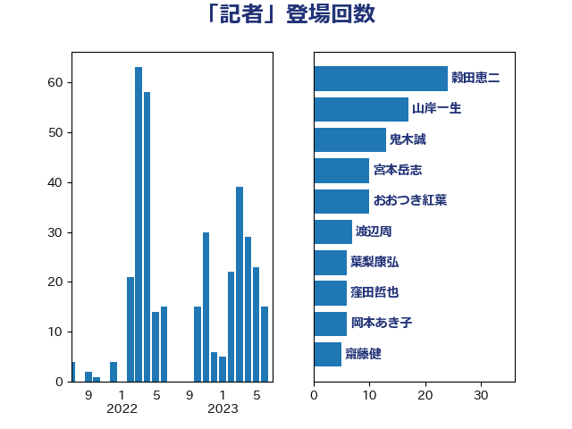

単語「記者」

| 穀田恵二 | 日本共産党 | 24 回 |
| 山岸一生 | 立憲民主党 | 13 回 |
| 鬼木誠 | 立憲民主党 | 12 回 |
| 浜田聡 | NHK党 | 11 回 |
| 芳賀道也 | 国民民主党 | 9 回 |
| 青山繁晴 | 自由民主党 | 9 回 |
| 麻生太郎 | 自由民主党 | 9 回 |
| 足立康史 | 日本維新の会 | 8 回 |
| 小西洋之 | 立憲民主党 | 7 回 |
| 岡本あき子 | 立憲民主党 | 7 回 |
| 伊藤孝恵 | 国民民主党 | 6 回 |
| 大西健介 | 立憲民主党 | 6 回 |
| 岸信夫 | 自由民主党 | 6 回 |
| 柚木道義 | 立憲民主党 | 6 回 |
| 渡辺周 | 立憲民主党 | 6 回 |
| 田村憲久 | 自由民主党 | 6 回 |
| 高橋千鶴子 | 日本共産党 | 6 回 |
| 北村経夫 | 自由民主党 | 5 回 |
| 茂木敏充 | 自由民主党 | 5 回 |
| 片山大介 | 日本維新の会 | 4 回 |
| 稲富修二 | 立憲民主党 | 4 回 |
| 荒井優 | 立憲民主党 | 4 回 |
| 赤嶺政賢 | 日本共産党 | 4 回 |
| 金子恭之 | 自由民主党 | 4 回 |
| 階猛 | 立憲民主党 | 4 回 |
| 丸川珠代 | 自由民主党 | 3 回 |
| 伊藤岳 | 日本共産党 | 3 回 |
| 加藤勝信 | 自由民主党 | 3 回 |
| 小熊慎司 | 立憲民主党 | 3 回 |
| 岸真紀子 | 立憲民主党 | 3 回 |
| 後藤祐一 | 立憲民主党 | 3 回 |
| 朝日健太郎 | 自由民主党 | 3 回 |
| 杉尾秀哉 | 立憲民主党 | 3 回 |
| 浜口誠 | 国民民主党 | 3 回 |
| 石橋通宏 | 立憲民主党 | 3 回 |
| 西村康稔 | 自由民主党 | 3 回 |
| 長妻昭 | 立憲民主党 | 3 回 |
| おおつき紅葉 | 立憲民主党 | 2 回 |
| 中司宏 | 日本維新の会 | 2 回 |
| 串田誠一 | 日本維新の会 | 2 回 |
| 吉川沙織 | 立憲民主党 | 2 回 |
| 坂井学 | 自由民主党 | 2 回 |
| 城井崇 | 立憲民主党 | 2 回 |
| 大塚耕平 | 国民民主党 | 2 回 |
| 小渕優子 | 自由民主党 | 2 回 |
| 山下雄平 | 自由民主党 | 2 回 |
| 山添拓 | 日本共産党 | 2 回 |
| 山田宏 | 自由民主党 | 2 回 |
| 打越さく良 | 立憲民主党 | 2 回 |
| 末松信介 | 自由民主党 | 2 回 |
| 本村伸子 | 日本共産党 | 2 回 |
| 松島みどり | 自由民主党 | 2 回 |
| 梅村みずほ | 日本維新の会 | 2 回 |
| 森山浩行 | 立憲民主党 | 2 回 |
| 武田良太 | 自由民主党 | 2 回 |
| 浅田均 | 日本維新の会 | 2 回 |
| 浦野靖人 | 日本維新の会 | 2 回 |
| 渡辺創 | 立憲民主党 | 2 回 |
| 福山哲郎 | 立憲民主党 | 2 回 |
| 笠井亮 | 日本共産党 | 2 回 |
| 菅義偉 | 自由民主党 | 2 回 |
| 萩生田光一 | 自由民主党 | 2 回 |
| 谷田川元 | 立憲民主党 | 2 回 |
| 音喜多駿 | 日本維新の会 | 2 回 |
| たがや亮 | れいわ新選組 | 1 回 |
| 三ッ林裕巳 | 自由民主党 | 1 回 |
| 上川陽子 | 自由民主党 | 1 回 |
| 中島克仁 | 立憲民主党 | 1 回 |
| 井上英孝 | 日本維新の会 | 1 回 |
| 勝部賢志 | 立憲民主党 | 1 回 |
| 古賀友一郎 | 自由民主党 | 1 回 |
| 吉田はるみ | 立憲民主党 | 1 回 |
| 吉田忠智 | 立憲民主党 | 1 回 |
| 國重徹 | 公明党 | 1 回 |
| 塩村あやか | 立憲民主党 | 1 回 |
| 大島敦 | 立憲民主党 | 1 回 |
| 奥野総一郎 | 立憲民主党 | 1 回 |
| 宮本徹 | 日本共産党 | 1 回 |
| 小野寺五典 | 自由民主党 | 1 回 |
| 小野泰輔 | 日本維新の会 | 1 回 |
| 山谷えり子 | 自由民主党 | 1 回 |
| 岡田克也 | 立憲民主党 | 1 回 |
| 岩谷良平 | 日本維新の会 | 1 回 |
| 岸田文雄 | 自由民主党 | 1 回 |
| 川合孝典 | 国民民主党 | 1 回 |
| 川田龍平 | 立憲民主党 | 1 回 |
| 平木大作 | 公明党 | 1 回 |
| 後藤茂之 | 自由民主党 | 1 回 |
| 斎藤洋明 | 自由民主党 | 1 回 |
| 新藤義孝 | 自由民主党 | 1 回 |
| 松沢成文 | 日本維新の会 | 1 回 |
| 柴田巧 | 日本維新の会 | 1 回 |
| 柿沢未途 | 無所属 | 1 回 |
| 武井俊輔 | 自由民主党 | 1 回 |
| 海江田万里 | 立憲民主党 | 1 回 |
| 湯原俊二 | 立憲民主党 | 1 回 |
| 源馬謙太郎 | 立憲民主党 | 1 回 |
| 玄葉光一郎 | 立憲民主党 | 1 回 |
| 田嶋要 | 立憲民主党 | 1 回 |
| 田村まみ | 国民民主党 | 1 回 |
| 田村智子 | 日本共産党 | 1 回 |
| 田畑裕明 | 自由民主党 | 1 回 |
| 石井章 | 日本維新の会 | 1 回 |
| 礒崎哲史 | 国民民主党 | 1 回 |
| 美延映夫 | 日本維新の会 | 1 回 |
| 蓮舫 | 立憲民主党 | 1 回 |
| 藤岡隆雄 | 立憲民主党 | 1 回 |
| 西村智奈美 | 立憲民主党 | 1 回 |
| 西銘恒三郎 | 自由民主党 | 1 回 |
| 赤澤亮正 | 自由民主党 | 1 回 |
| 逢坂誠二 | 立憲民主党 | 1 回 |
| 道下大樹 | 立憲民主党 | 1 回 |
| 重徳和彦 | 立憲民主党 | 1 回 |
| 金子恵美 | 立憲民主党 | 1 回 |
| 鈴木庸介 | 立憲民主党 | 1 回 |
| 長友慎治 | 国民民主党 | 1 回 |
| 高良鉄美 | 無所属 | 1 回 |